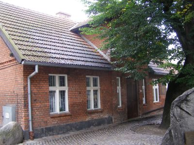
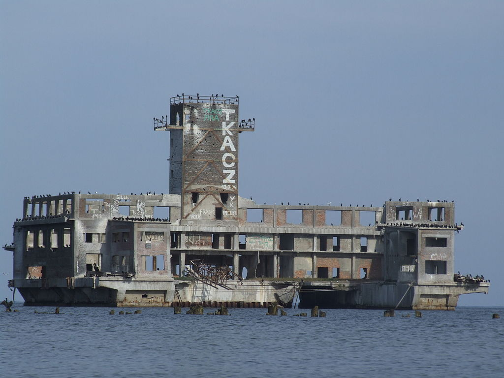

Trójmasztowiec zakupiony przez spo³eczeñstwo Pomorza w 1929 dla Szko³y Morskiej w Gdyni. By³ statkiem szkoleniowym dla marynarzy. Obecnie stoi przy Skwerku Ko¶ciuszki jako muzeum.
Niszczyciel typu Grom. Zosta³ wprowadzony do s³u¿by w roku 1937. Jest to jedyny ocala³y polski okrêt zbudowany przed II wojn± ¶wiatow± oraz najstarszy na ¶wiecie wci±¿ istniej±cy niszczyciel. Od roku 1976 pe³ni rolê muzeum.
Zbudowany z czerwonej ceg³y. Usytuowany przy ulicy Starowiejskiej obecnie pe³ni rolê Muzeum Miasta Gdyni. Dom ten liczy sobie ju¿ ponad 100 lat (powsta³ w 1904 roku). Sw± nazwê zawdziêcza swemu mieszkañcowi, aktywnemu dzia³aczowi w sprawie walki o polsko¶æ Kaszub, Antoniemu Abrahamowi. Spêdzi³ on w tym miejscu ostatnie lata
Wybudowana na kesonach zatopionych w odleg³o¶ci trzystu metrów od brzegu. Nieremontowana i niewykorzystywana po wojnie popad³a w ruinê, a basen portu uleg³ zamuleniu.
Ko¶ció³ neobarokowy. Znajduje siê przy ulicy ¦wiêtojañskiej. Inspiratorem powstania by³ wójt Jan Radtke. Grunt pod budowê zosta³ podarowany przez w³a¶cicielkê du¿ego gospodarstwa, El¿bietê Skwiercz. Obecnie ko¶ció³ ma rangê kolegiaty i jest